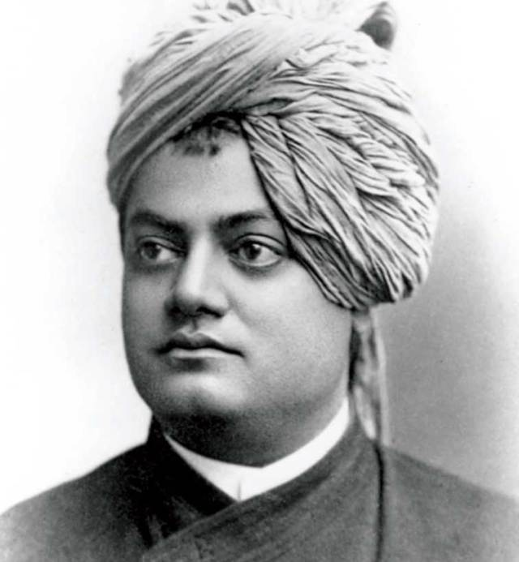

"Arise, awake, and stop not till the goal is reached..."

Time lines of Vivekananda's Life
1863 - Born in Calcutta, India on 12 January 1863 and named as Narendranath Datta.
1871 - At the age of eight, Narendranath enrolled at Ishwar Chandra Vidyasagar's
Metropolitan Institution, where he went to school until his family moved to Raipur in 1877.
1881 - He passed the Fine Arts examination, and completed a Bachelor of Arts degree
in 1884.
1884 - Completed his Bachelors with this honourific words from his Principal,
"Narendra is really a genius. I have travelled far and wide but I have never come across a lad of
his talents and possibilities, even in German universities, among philosophical students. He is
bound to make his mark in life".
1885 - After the death of his dad, Narendra gradually grew ready to renounce
everything for the sake of realising God, and accepted Ramakrishna as his Guru.
1886 - Narendra took the name Swami Vivekananda and asked my Ramakrishna to be the leader of his disciples.
1893 - Influenced the Parliament of Religions with his oration.
1897 - Founded the Ramakrishna Mission for social service.
1902 - Died at the age of 39.
Vivekananda's contributions
World Culture
New Understanding of Religion
New View of Man
New Principle of Morality and Ethics
Bridge between the East and the West
Hinduism
Identity
Unification
New Ideal of Monasticism
Refurbishing of Hindu Philosophy
Sayings of Swami Vivekananda
You have to grow from the inside out. None can teach you, none can make you spiritual. There is no other
teacher but your own soul.
You cannot believe in God until you believe in yourself.
All the powers in the universe are already ours. It is we who have put our hands before our eyes and cry
that it is dark.
Condemn none: if you can stretch out a helping hand, do so. If you cannot, fold your hands, bless your
brothers, and let them go their own way.
Arise, awake, and stop not till the goal is reached.
When an idea exclusively occupies the mind, it is transformed into an actual physical or mental state.
Truth can be stated in a thousand different ways, yet each one can be true.
External nature is only internal nature writ large.
We are what our thoughts have made us; so take care about what you think. Words are secondary. Thoughts
live; they travel far.
The world is the great gymnasium where we come to make ourselves strong.